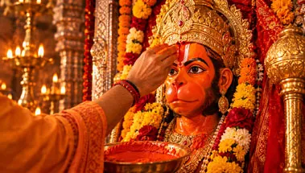
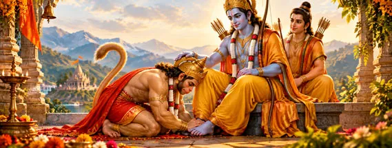

हनुमान जी का दिव्य स्वरूपThe Divine Form of Hanumanহনুমান জির দিব্য স্বরূপहनुमान जी का दिव्य स्वरूप
The Divine Form of Hanuman
হনুমান জির দিব্য স্বরূপ
जन्म, स्वरूप, नाम, प्रतीक, गुण और शिव-राम से जुड़े पवित्र संबंधों का विस्तृत परिचय।
A rich exploration of Hanuman’s birth traditions, names, symbols, qualities and sacred relationships.
জন্ম, স্বরূপ, নাম, প্রতীক, গুণ এবং শিব-রামের সঙ্গে পবিত্র সম্পর্কের বিস্তৃত পরিচয়।
हनुमान जी कौन हैं?
Who Is Hanuman?
হনুমান জি কে?
हनुमान जी केवल असाधारण शक्ति के प्रतीक नहीं हैं। वे भक्ति में समर्पण, बुद्धि में विवेक, कर्म में साहस और सामर्थ्य में विनम्रता का आदर्श प्रस्तुत करते हैं।
Hanuman is not remembered merely as a figure of extraordinary strength. He represents devotion in surrender, discernment in wisdom, courage in action and humility in power.
হনুমান জি শুধু অসাধারণ শক্তির প্রতীক নন। তিনি ভক্তিতে সমর্পণ, জ্ঞানে বিবেচনা, কর্মে সাহস এবং শক্তিতে বিনয়ের আদর্শ।
दिव्य जन्म परंपराएँ
Divine Birth Traditions
দিব্য জন্মের পরম্পরা
अंजनी माता, केसरी और पवन देव
Anjana, Kesari and Vayu
অঞ্জনা, কেশরী ও পবনদেব
रामायण और पुराणपरंपराओं में जन्म से जुड़े विभिन्न विवरण मिलते हैं। अंजनी माता और केसरी के साथ पवन देव की भूमिका पवनपुत्र नाम से भी जुड़ी है। विभिन्न परंपराओं में हनुमान जी के जन्म को दिव्य कृपा और ईश्वरीय उद्देश्य से संबंधित माना गया है। उनके जन्म की कथा में उनकी असाधारण शक्ति, तेज और श्री राम की सेवा के लिए उनके भावी जीवन की भूमिका के संकेत मिलते हैं। इसी कारण हनुमान जी का जन्म केवल एक दिव्य घटना के रूप में नहीं, बल्कि धर्म और भक्ति की महान यात्रा के आरंभ के रूप में भी स्मरण किया जाता है।
Ramayana and Puranic traditions preserve different birth details. Anjana and Kesari are central to the narrative, while Vayu is reflected in the name Pavanputra. Different traditions connect Hanuman’s birth with divine grace and a sacred purpose. The birth narrative also points toward his extraordinary strength, radiance, and his destined role in serving Shri Rama. For this reason, Hanuman’s birth is remembered not only as a divine event, but also as the beginning of a great journey of dharma and devotion.
রামায়ণ ও পুরাণের বিভিন্ন পরম্পরায় জন্মের নানা বিবরণ পাওয়া যায়। অঞ্জনা ও কেশরীর সঙ্গে পবনদেবের ভূমিকা ‘পবনপুত্র’ নামের সঙ্গে যুক্ত। বিভিন্ন পরম্পরায় হনুমানজির জন্মকে দিব্য কৃপা ও এক পবিত্র উদ্দেশ্যের সঙ্গে যুক্ত করা হয়েছে। তাঁর জন্মকথায় তাঁর অসাধারণ শক্তি, তেজ এবং শ্রী রামের সেবায় তাঁর ভবিষ্যৎ ভূমিকার ইঙ্গিতও পাওয়া যায়। তাই হনুমানজির জন্মকে শুধু একটি দিব্য ঘটনা হিসেবে নয়, ধর্ম ও ভক্তির এক মহান যাত্রার সূচনা হিসেবেও স্মরণ করা হয়।
बाल हनुमान और सूर्य देव
Child Hanuman and the Sun
বাল হনুমান ও সূর্যদেব
असीम ऊर्जा की बाल लीला
A Childhood of Boundless Energy
অসীম শক্তির বাললীলা
बाल हनुमान द्वारा सूर्य को फल समझकर उसकी ओर उड़ने की कथा उनकी अद्भुत ऊर्जा और निर्भीकता की प्रसिद्ध लीला है। इस कथा में उनके बालस्वभाव, असाधारण शक्ति और आकाश में निर्भय होकर आगे बढ़ने का वर्णन मिलता है। सूर्य की ओर उनका यह दिव्य प्रयास उनकी अद्भुत जिज्ञासा और साहस का प्रतीक माना जाता है। बाल हनुमान की इस लीला को भक्त उनकी दिव्य शक्ति और भविष्य में होने वाले महान कार्यों की एक झलक के रूप में स्मरण करते हैं।
The famous story of young Hanuman flying toward the Sun is remembered as a striking expression of his energy and fearlessness. The story also reflects his youthful nature, extraordinary strength, and fearless movement through the sky. His divine attempt to reach the Sun is remembered as a symbol of his remarkable curiosity and courage. Devotees remember this childhood episode as a glimpse of the divine strength and great deeds that would become central to Hanuman’s life.
বাল হনুমান সূর্যকে ফল মনে করে তার দিকে উড়ে যাওয়ার কাহিনি তাঁর শক্তি ও নির্ভীকতার প্রসিদ্ধ লীলা। এই কাহিনিতে তাঁর বালসুলভ স্বভাব, অসাধারণ শক্তি এবং নির্ভয়ে আকাশপথে এগিয়ে যাওয়ার কথা ফুটে ওঠে। সূর্যের দিকে তাঁর এই দিব্য যাত্রা তাঁর অনন্য কৌতূহল ও সাহসের প্রতীক হিসেবে স্মরণ করা হয়। ভক্তরা এই বাললীলা তাঁর দিব্য শক্তি এবং ভবিষ্যতের মহান কর্মের এক ঝলক হিসেবে স্মরণ করেন।

पवित्र प्रतीकों का अर्थ
Sacred Symbols of Hanuman
হনুমান জির পবিত্র প্রতীক
गदा
The Gada
গদা
शक्ति और धर्मरक्षा के सामर्थ्य का प्रतीक।
A symbol of strength and capacity for service.
শক্তি ও ধর্মরক্ষার সামর্থ্যের প্রতীক।

सिंदूर
Sindoor
সিঁদুর
कई हनुमान परंपराओं में विशेष स्थान।
Important in several Hanuman traditions.
হনুমান ভক্তির বহু পরম্পরায় বিশেষ স্থান।

पर्वत
The Mountain
পর্বত
संजीवनी पर्वत सेवा और दृढ़ संकल्प की स्मृति है।
The mountain recalls service and determination.
পর্বত সেবা ও দৃঢ় সংকল্পের স্মারক।

विनम्र प्रणाम
Humble Devotion
বিনম্র প্রণাম
शक्ति के साथ विनम्रता।
Humility alongside strength.
শক্তির সঙ্গে বিনয়।
हनुमान जी के नौ पावन मार्ग
Nine Sacred Paths of Hanuman Bhakti
হনুমান জির নয়টি পবিত্র পথ
जय श्री राम • जय हनुमान
Jai Shri Ram • Jai Hanuman
জয় শ্রী রাম • জয় হনুমান
श्री हनुमान जी हमें भक्ति में स्थिरता, सेवा में विनम्रता, कर्म में साहस और धर्म के मार्ग पर चलने की शक्ति प्रदान करें।
May Lord Hanuman guide us toward steadfast devotion, humble service, courageous action and a life rooted in dharma.
শ্রী হনুমান জি আমাদের ভক্তিতে স্থিরতা, সেবায় বিনয়, কর্মে সাহস এবং ধর্মের পথে চলার শক্তি প্রদান করুন।